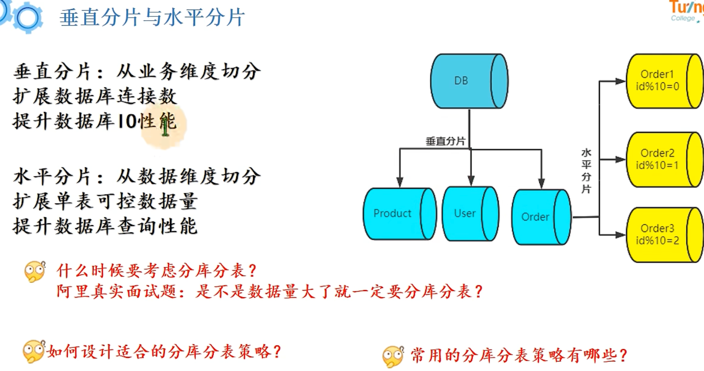

分库分表
修改于: 2023-02-20具体情况具体分析, 合理选择策略.
注解
还有 NewSQL 的 单机 到 分布式集群, 不属于分库分表, 而是直接就实现了分布式
分库分表算是一个轻量级的优化解决方案
- 分库: 将数据分离多个库, 解放数据库IO性能
- 分表: 将数据分离多个表, 突破单表数据压力
注解
这里提一句, 还有其他优化方案, 比如使用 主从架构 (binlog) 实现 读写分离
业务代码层面, 读写分离只关注路由到读的库, 还是写的库.
分库分表方案
数据分片
- 常见策略
- 取模分片。优点：数据存放均匀。缺点：扩容需要大量数据迁移。
- 按范围分片。优点：扩容不需要迁移数据。缺点：数据存放不均匀，容易产生数据倾斜(比如按月份分, 某月的数据过多, 另一月内数据又过少)。
- 配置路由, 比如将路由配置信息写到路由表; 缺点是得多查询一次, 以及数据量大时候又回陷入分表循环;
- 根据业务场景，灵活定制分片策略。--面试重点
垂直拆分
垂直分片：
- 从业务维度切分扩展数据库连接数
- 提升数据库IO性能
把单库中的不同表分到不同的库, 再深入点, 把单表的列拆分给多个表
水平拆分
水平分片：
- 从数据维度切分扩展单表可控数据量
- 提升数据库查询性能
水平分片从理论上突破了单机数据量处理的瓶颈，并且扩展相对自由，是分库分表的标准解决方案。
如
比如按日期拆分(范围分表), 那在WEB应用的角度怎么查? 可以按照时间, 2021年的查2021年的表...
- Hash分表
其实就是上面的取模策略.
查id, id计算hash后对多少(比如拆为4张表)取余, 然后决定去哪个表查.
但是有个缺点, 后续如果再拆4个表, 加起来一共八个, 之前的逻辑的混乱了. 所以还要作数据迁移
无热点问题, 但是扩容迁移麻烦.
- 范围分表
时间分表就是,
比如 1000-2000 w数据在第2张表.
存在热点问题. 比如同时并发在某一个表.
分库分表后如何实现不停机扩容
实际上，不停机扩容，实操起来是个非常麻烦而且很有风险的操作， 当然，面试回答起来就简单很多。
- 第一阶段：在线双写，查询走老库
- 建立好新的库表结构，数据写入老库的同时，也写入拆分的新库
- 数据迁移，使用数据迁移程序，将旧库中的历史数据迁移到新库
- 使用定时任务，新旧库的数据对比，把差异补齐
- 第二阶段：在线双写，查询走新库
- 完成了历史数据的同步和校验
- 把对数据的读切换到新库
- 第三阶段：旧库下线
- 旧库不再写入新的数据
- 经过一段时间，确定旧库没有请求之后，就可以下线老库
分库分表问题
从分库的角度来讲
- 事务的问题
使用关系型数据库，君很大一点在于它保证事务完整性。
而分库之后单机事务就用不上了，必须使用分布式事务来解决。
- 跨库 JOIN 问题
在一个库中的时候我们还可以利用JOIN 来连表查询，而跨库了之后就无法使用JOIN 了
此时的解决方案就是在业务代码中进行关联，也就是先把一个表的数据查出来， 然后通过得到的结果再去查另一张表，然后利用代码来关联得到最终的结果。
这种方式实现起来稍微比较复杂，不过也是可以接受的。
还有可以适当的冗余一些字段。比如以前的表就存储一个关联 ID，但是业务时常要求返回对应的 Name 或者其他字段。 这时候就可以把这些字段冗余到当前表中，来去除需要关联的操作。
还有一种方式就是数据异构，通过binlog同步等方式，把需要跨库join的数据同步到ES的大宽表里去，通过ES直接查询，效率很高。
从分表的角度来看
- 跨节点的 count,order by.group by 以及聚合函数问题
- 只能由业务代码来实现或者用中间件将各表中的数据汇总、排序、分页然后返回。
- 数据迁移，容量规划，扩容等问题
- 数据的迁移，容量如何规划，未来是否可能再次需要扩容，等等，都是需要考虑的问题。
- ID 问题
数据库表被切分后，不能再依赖数据库自身的主键自增生成机制，所以需要一些手段来保证全局主键唯一。 即 案例-主键冲突
- 还是自增，只不过自增步长设置一下。比如现在有三张表，步长设置为3， 三张表ID 初始值分别是1、2、3。 这样第一张表的ID增长是1、4、7。第二张表是2、5、8。第三张表是3、6、9，这样就不会重复了。
- UUID，这种最简单，但是不连续的主键插入会导致严重的页分裂，性能比较差。
- 分布式ID，比较出名的就是 Twitter 开源的 sonwflake 雪花算法
案例-主键冲突
数据库一般使用整型自增主键, 那么当进行分库分表时, 新的表也是需要主键索引的, 这个时候就会有主键冲突, 如何解决?
有个自定义主键, 雪花 算法, 它让主键只是保持一个增加的趋势, 具体怎么实现的, 后面再研究.
案例-多数据源, 分布式事务问题
分库分表开源框架
ShardingSphere分库分表
京东开源
支持:
- ShardingJDBC: 客户端分库分表
- ShardingProxy: 服务端分库分表
实际使用方面来看, 实现是通过配置把多个表、库整合为一个逻辑表、库
支持策略
Inline策略 - 根据单一分片键进行精确分片; 如 SQL:
Insert into course values (?,?,?,?) Select * from course where cid = ? Select * from course where cid in ?
注: 此处cid是由雪花算法生成的主键id
分片键: cid尽量不要用id，MyBatis会对id字段默认生成雪花主键
分片算法:
m$->{cid%2+1}.course_$-> I ((cid+1) %4).intdiv(2) +1}真实节点:
m$->{1.. 2}.course_$->{1.. 2}Standard策略 - 根据单一分片键进行精确或者范围分片;
如SQL:
Select * from course where cid between ? and ?
分片键: cid
分片算法:
Precise algorithm + Range algorithm
真实节点:
m$->{1.. 2}.course_$->{1.. 2}Complex策略 - 根据多个分片键进行精确或者范围分片;
Hint策略 - 使用与SQL无关的方式进行分片; 如查询的cid是奇数
其他:
- 支持读写分离下的策略配置
案例举例
案例-不同用户端优化
说明: 主要是运营管理端, 如果需要实时可以用es, es中可以只存相关关键查询字段和主键 然后再拿主键去数据库拿.
案例-线上单库不停机迁移
先考虑停机迁移, 可以直接整库迁移, 或者每次迁移1k数据等
但是如果是线上迁移, 期间可能会有业务数据更新.
- 方案一: 监听binlog
binlog记录了对数据库的修改, 阿里有个开源的 canal 组件 , 可以做到监听binlog
然后把binlog的变动解析出来写到新库表. 但是得考虑, 如果监听binlog写到新库表要比迁移的快, 就会造成数据混乱. 解决方案就是用版本啊, 重试机制啥的
迁移后也不能马上全部拿去用, 而是 灰度发布, 先给部分服务器用. 灰度的周期一般比较短, 因为期间可能有分流的问题, 比如更新的新表, 但是有查询旧表...